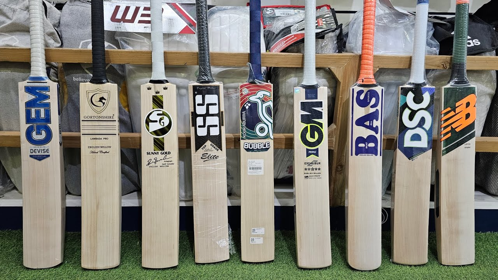

Our Heritage
Our Brand Story
In 1998, master craftsman Harshit Raj Chauhan set up a small workshop in Jamshedpur with a single vision: to create cricket bats that would outlast any other — in quality, performance, and soul. Armed with generations of woodworking knowledge and a deep love of cricket, he crafted his first bat by hand.
Word spread quickly. Players who held a CHAUHAN bat knew instantly they were holding something different — something alive. Today, CHAUHAN Sporting is trusted by state cricketers, national aspirants, and international stars across 48 countries.
But nothing has changed at our core. Every bat is still made by hand. Every edge still checked personally. Every delivery still comes with the Chauhan name — and our word.
What We Stand For
We reject shortcuts. Every bat undergoes 14 stages of quality control before it reaches your hands. Our rejection rate is high — because our standards are higher.
Performance isn't a buzzword here — it's engineered into every millimetre. From weight distribution to edge swell, every detail is tuned for maximum output.
Each bat carries the fingerprints of its maker — literally. We believe the best equipment is made with heart, not machines. Our craftsmen sign every bat they build.
The Making
We handpick only the finest clefts from Grade 1 English willow. Each cleft is assessed for grain density, moisture content, and structural integrity by our master craftsman.
Clefts are hydraulically pressed to compact fibres, then hand-shaped using traditional tools. The profile — concave, flat, or raised spine — is crafted to exact player specifications.
Every bat is machine-knocked for 3 hours, then hand-knocked for another hour. A minimum 4-week conditioning period follows before the bat leaves our workshop.
Handles are hand-wrapped with premium grips. Final weight, balance, and sweet-spot are verified. Each bat is then signed, sealed, and certified by the craftsman.

Premium Materials
Sourced from the finest willow beds in Suffolk, England. Dense, light, and naturally responsive. The gold standard in cricket bat manufacturing.
Multi-piece Sarawak cane handles provide superior shock absorption and vibration dampening. Wrapped with premium rubber for a perfect, comfortable grip.
Each blade receives multiple coats of raw linseed oil for deep nourishment and protection. This traditional method preserves the wood's natural resilience.
Our signature grips offer superior tackiness and sweat absorption. Available in round and octopus profiles to match your personal preference.